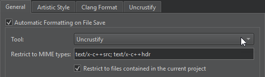
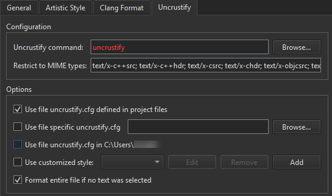

Beautify source code
Beautifying code means applying indentation and style to source code files. Use the experimental Beautifier plugin to format your source code with the following external tools:
The Beautifier plugin parses the source code into component structures, such as assignment statements, if blocks, loops, and so on, and formats them according to the Beautifier preferences. You can use a predefined style or define your own style.
To automatically format files when you save them:
- Download and install the tool to use for formatting source code:
Note: You might have to build the tools from sources for some platforms.
- Enable the Beautifier plugin.
Note: Since Qt Creator 10.0.0, the ClangFormat plugin is enabled by default. Go to Preferences > C++ > Formatting mode, and select Disable to turn off ClangFormat if you enable Beautifier because combining them can lead to unexpected results.
- Go to Preferences > Beautifier > General to select the tool to use.

- Select Automatic formatting on file save to automatically beautify files when you save them using the tool you select in the Tool field.
To temporarily disable this setting while saving a file, go to File and select Save Without Formatting.
- Go to Artistic Style, ClangFormat, or Uncrustify to set the path to the tool executable and to select the configuration file that defines the style to use.

Beautifier Uncrustify preferences
Format the currently open file
Go to Tools > Beautifier > Artistic Style, ClangFormat, or Uncrustify to select actions for formatting text in the current file.
You can create keyboard shortcuts for the actions.
Go to Format Current File to format the currently open file.
Format at cursor with ClangFormat
Go to Tools > Beautifier > ClangFormat > Format at Cursor when no text is selected to format the syntactic entity under the cursor.
Go to Format Line(s) to format the selected lines.
Go to Disable Formatting for Selected Text to wrap selected lines within // clang-format off and // clang-format on.
Format selected text with Uncrustify
Go to Tools > Beautifier > Uncrustify > Format Selected Text when no text is selected to format the whole file by default.
To turn off this behavior, clear Format entire file if no text was selected in Preferences > Beautifier > Uncrustify.
See also Enable and disable plugins and Beautifier.